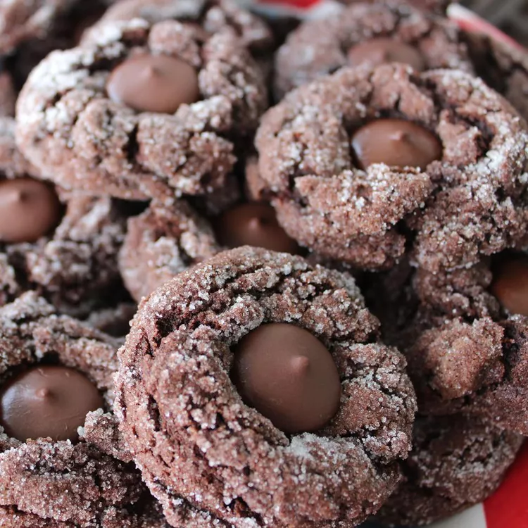

Home
Dark Mocha Crinkles Recipe

Description
Chewy dark chocolate mocha goodness.
Ingredients
- 1 cup butter, at room temperature
- ¾ cup brown sugar
- ⅓ cup white sugar
- ¼ cup instant coffee powder
- 2 eggs
- 1 teaspoon vanilla extract
- 2 cups all-purpose flour
- ¾ cup cocoa powder
- 1 teaspoon baking soda
- ½ teaspoon salt
- ½ cup white sugar
- 24 dark chocolate wafers
Steps
- Preheat the oven to 375 degrees F (190 degrees C). Line 2 baking sheets with parchment paper.
- Combine butter, brown sugar, 1/3 cup sugar, and coffee powder in a large bowl; beat with an electric mixer until creamy. Blend in eggs and vanilla extract. Mix in flour, cocoa powder, baking soda, and salt together until dough is uniform.
- Pour 1/2 cup sugar onto a shallow plate. Shape dough into 2-inch balls and roll in the sugar until coated. Arrange on the prepared baking sheets.
- Bake in the preheated oven until edges are set, about 10 minutes. Immediately press a dark chocolate wafer into each cookie. Let cool on a wire rack.